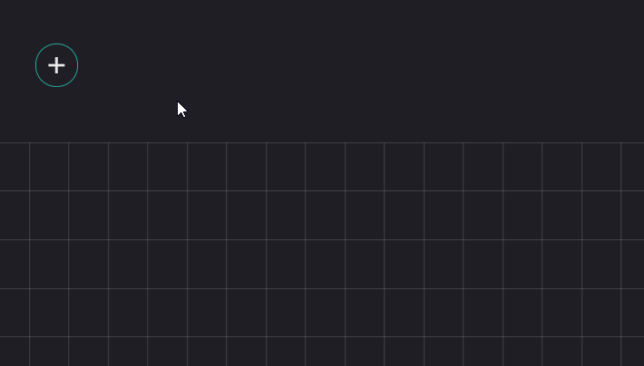
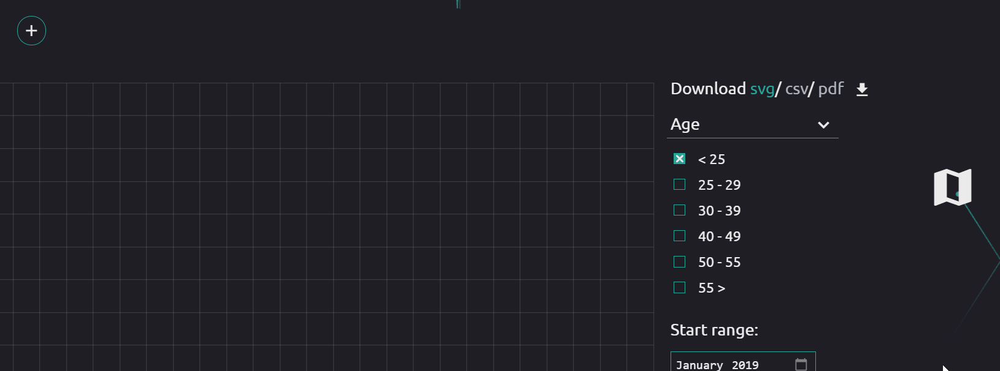
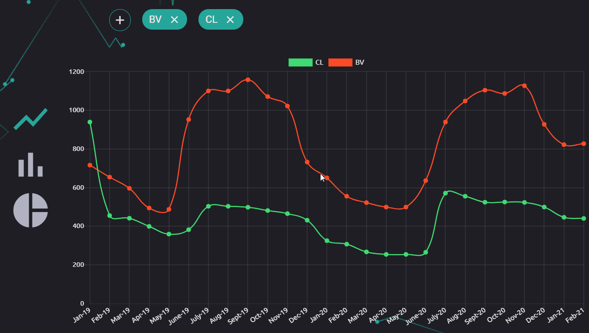
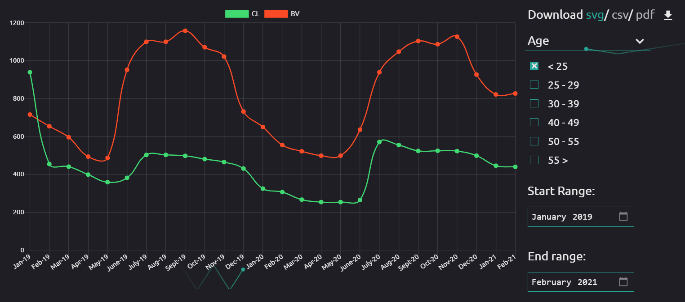
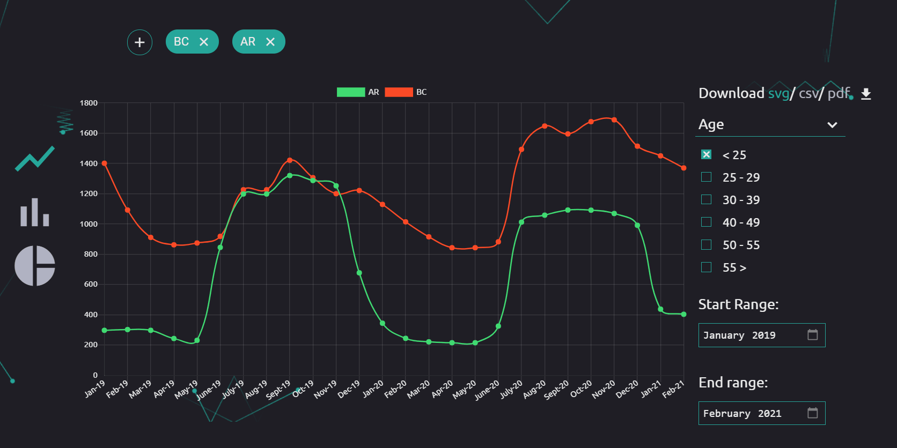
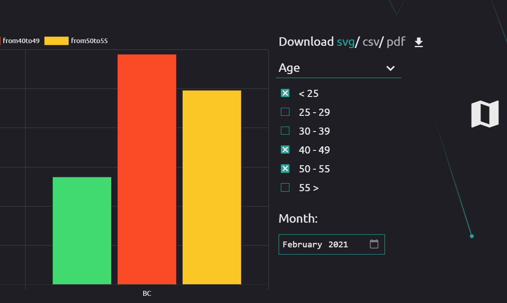

Aplicația noastră conține paginile Home, Statistics, API și Admin, dintre care vom prezenta cum poate fi folosită pagina Statistics, celelalte fiind self-explanatory.
Putem adăuga județe în chart fie prin butonu plus din partea de sus a paginii, fie de pe harta ce se poate deschid cu iconul din dreapta al unei hărți.
 Putem schimba tipul chartului, line, bar sau pie cu butoanele din partea stângă.
Putem alege categoria și opțiunea a ce se afișează în chart prin meniul din dreapta acestuia.
Putem alege perioada din care să arate datele.
Iar pentru a descărca, putem alege svg, csv sau pdf.
